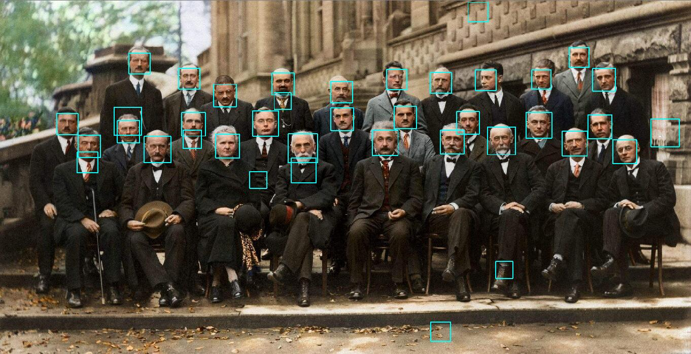

在最近刷今日头条以及其他媒体软件时，经常会发现一些AI换脸的视频，于是我想，可不可以自己实现一个可以进行人脸识别的软件程序。我的具体流程是先配合python网络爬虫先进行万张PubFig人脸公共图片的爬取，分析出图片具体特征，然后再配合机器学习的OpenCV视觉库进行软件的构建。有一篇Github的文章讲得很详细，大家可以参考：https://github.com/Hironsan/BossSensor。
前几篇博客先向大家讲解如何爬取PubFig人脸数据，然后本片的话先用一些动漫人脸图片，向大家展示基本的opencv库的操作，以及用一些公共人脸数据进行简单的人脸识别技术学习。
1.OpenCV简介
OpenCV是一个开源的跨平台计算机视觉库，提供的有python接口，并实现了图像处理和计算机视觉方面的很多通用算法。
2.需要安装的包
本篇先安装Opencv和numpy，pandas等数据分析包即可，如果感觉麻烦的话，可以直接安装Anaconda科学包(数据分析，挖掘，机器学习库合集)，安装与不同编译器配置环境过程这里就不讲解了。
下载地址(官网太慢了，推荐下面的地址)：https://mirrors.tuna.tsinghua.edu.cn/pypi/web/simple/opencv-python/。python3.5以上的需要下载opencv_python-4.0之类的版本，这里用到的是opencv_python-4.0.0.21-cp37-cp37m-win_amd64.whl这个文件。
安装完后，我们先用下面的代码输出一个图片：
import cv2
img = cv2.imread("1.jpg", 1)
cv2.imshow("1", img)
cv2.waitKey()结果如下：
发现我们的环境已经成功安装了。
3.初步人脸识别
由于本篇文章是第一篇，因此这里先简单的展示一下opencv的一些机器视觉的基础方法，下面就进行介绍。
(1)导入人脸图片，这里用一张动漫图
代码和上面的类似，更改图片即可：
import cv2
img = cv2.imread("firstPer.jpg", 1)
cv2.imshow("1", img)
cv2.waitKey()
cv2.destroyAllWindows()这里我们把这段代码封装成一个函数：
def viewImage(image, name_of_window):
'''
image:图像对象
name_of_window:图像窗口名称
'''
cv2.namedWindow(name_of_window, cv2.WINDOW_NORMAL)
cv2.imshow(name_of_window, image)
cv2.waitKey()
cv2.destroyAllWindows()(2)一些基础图像处理的方法
cropped：cropped = image[y:y+h, x:x+w]，就是以(y, x)为起点，裁剪大小为(h, w)的图像，以左上角为起点，竖直向下的方向为y轴，横向为x轴。
resized：dim = (width, height)
resized = cv2.resize(img, dim, interpolation = cv2.INTER_AREA)
调整图像的大小。
用下面的代码分别进行这两种图像的处理：
img = cv2.imread("firstPer.jpg", 1)
# 裁剪图片大小，裁剪100范围的图片
cropped = img[0:100, 0:100]
viewImage(cropped,"firstPer")img = cv2.imread("firstPer.jpg", 1)
scale_percent = 30 #调整30%的大小
width = int(img.shape[1] * scale_percent / 100)
height = int(img.shape[0] * scale_percent / 100)
dim = (width, height)
resized = cv2.resize(img, dim, interpolation = cv2.INTER_AREA)
viewImage(resized,"firstPer")还有一一些用的操作方法，就是旋转，调节亮度，变模糊/平滑，绘制边框，绘制线段等，在这里并不是进行图像处理，因此就先不先向大家讲解。哈哈。
(3)图像灰度处理
在进行人脸识别时，好多地方都先进行图像变灰度的操作，这里也给大家介绍一下：
这里有一个阈值函数，gray_image，将所有图像变为比127更暗直至0或者增加亮度到255，将图像的彩色边框的内容略过。
灰度处理代码：
gray_image = cv2.cvtColor(img, cv2.COLOR_BGR2GRAY)
viewImage(gray_image,"gray Image")结果：
亮度彩色阈值处理代码：
one,threshold_image = cv2.threshold(img, 127, 255, 0)
viewImage(threshold_image,"firstPer")结果：
主要是有后面的三个参数控制，大家有兴趣可以自行学习。
(4)人脸识别初讲
如果我们需要进行人脸识别，需要下载一些opencv配置文件，地址为：https://github.com/opencv/opencv/tree/master/data/haarcascades，这里我们用到的是haarcascade_frontalface_default.xml文件。用下面的代码进行检测：
face_cascade = cv2.CascadeClassifier('haarcascade_frontalface_default.xml')
img = cv2.imread("firstPer.jpg")
gray = cv2.cvtColor(img, cv2.COLOR_BGR2GRAY)
faces = face_cascade.detectMultiScale(
gray, # 灰度图
scaleFactor= 1.1, # 缩放比例
minNeighbors= 2, # 识别出一个人脸之前在当前物体周围需要检测的物体数目
minSize=(50, 50) #窗口的大小
)
firstPer = format(len(faces)) + "faces detected!"
print(firstPer)# Draw a rectangle around the faces
for (x, y, w, h) in faces:
cv2.rectangle(img, (x, y), (x+w, y+h), (255, 255, 0), 2)
viewImage(img,firstPer)detectMultiScale函数是一个检测物体的通用函数。当我们把它用于人脸检测时，它就会从图像中检测出人脸。
但是我们却发现，根本没有检测出我们可爱的小樱的脸，这是为什么呢？不急，我们先用其他图片检测：
再来一张最美的图片：

这时我们发现，识别程序识别的时候会有两个要注意的地方，第一个是动漫图片线条简单，有时候并不能识别出；而且识别的能力和图片的清晰度也有关系。
针对第一个问题，在接下来的教程中，我会使用哥伦比亚大学的公共PubFig人脸库作为人脸识别数据集，进行机器视觉的训练。向大家讲解一下如何用机器学习训练一个不仅仅能够识别人脸，而且还能够识别表情的软件，欢迎大家继续关注我的博客，如果有宝贵建议的话，请在下方评论。